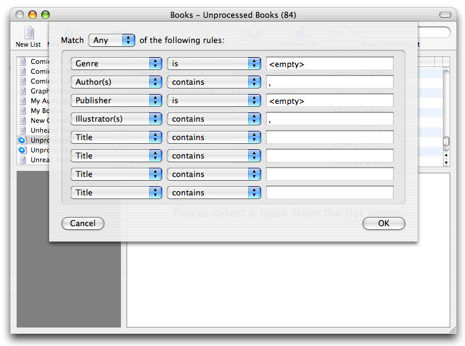
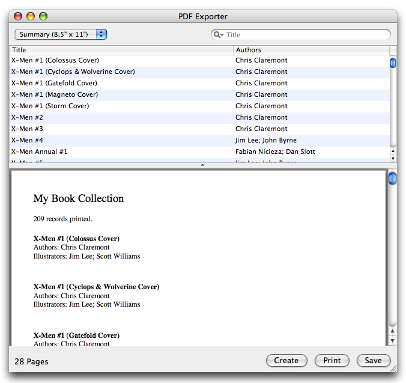

Are you a current user of Books?
If you're a current user of Books, here are some tips for enhancing your Books experience.
Tip: To customize the toolbar, right-click (or hold down Control and click if you're using a single button mouse) to access features to tailor the toolbar to your liking.
Tip: To switch between list view and gallery view, add the View item to your toolbar. You can use that to switch between views. If you'd like to customize the view, use the View Inspector item to display options for the visible view.
Tip: To change the fields visible in the book list in the main window, right-click the table header to bring up a menu to select fields. You can resize and drag the column headers to create the view you want. Clicking the column headers will also sort the list.
Tip: To view a high-resolution version of the displayed cover image, simply click on the image in the lower-left portion of the main window.
Tip: To create a smart list that finds books with missing values, use the <empty> string in the smart list editor.

Use <empty> to Find Incomplete Books
Tip: If you have a lot of items to fill, enter their ISBN numbers into new records and use the Batch Quickfill Visible Items under the List menu.
Tip: To print a list of books, do the following:
1. Install the PDF Exporter from the Plugin Manager.
2. Select the list of books to print. (If you would like to print all books in your collection, uncheck Only export selected items in the preferences.)
3. Load the PDF Exporter from the File→Export menu.

The PDF Exporter
4. Select the desired style from the upper-left and click the Create button to generate a PDF. You may print or save this file.
Did You Know?
The first version of Books was released in 2003. At that time, there were two notable book applications on the Mac: Library and Readerware. Since then, a number of developers have released similar applications such as Booxter, Bookpedia, and Delicious Library. Readerware is still around and quite popular on the Windows platform.